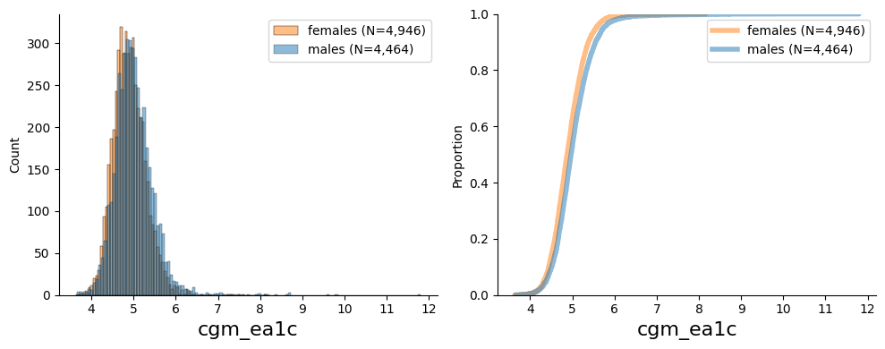

from pheno_utils import PhenoLoader017-cgm
CGM dataset
Continuous Glucose Monitoring (CGM) measures glucose levels in a continuous manner.
This measure provides information on blood glucose control and glucose variability and could be used to monitor patients with diabetes.
Each 14-day continuous measure is termed a single CGM-connection.
Using the glucose measured in the CGM connection, we can calculate summary features (which was done using the iglu package) summarizing information on glucose control and variability.
These were calculated for the entire CGM connection as well as for daily segments of the data.
The actual glucose measures are stored in multiple parquet files, each file holds the glucose measures for a single CGM connection.
Data availability:
The metadata and summary features are stored in 3 main statistics parquet files: cgm.parquet, iglu.parquet, iglu_daily.parquet.
pl = PhenoLoader('cgm')
plPhenoLoader for cgm with
94 fields
4 tables: ['cgm', 'iglu', 'iglu_daily', 'age_sex']Data dictionary
pl.dict| field_string | description_string | folder_id | feature_set | field_type | strata | data_coding | array | pandas_dtype | bulk_file_extension | ... | sexed | debut | completed | customer_field | dependency | old_data_loader | old_lab_data_column_name | min_plausible_value | max_plausible_value | parent_dataframe | |
|---|---|---|---|---|---|---|---|---|---|---|---|---|---|---|---|---|---|---|---|---|---|
| tabular_field_name | |||||||||||||||||||||
| cgm_time_series | CGM timeseries | File containing the participants' CGM timeseries | 17 | timeseries | Time series file (individual) | Primary | NaN | Single | string | .parquet | ... | Both sexes | 2018-12-27 | NaN | NaN | NaN | NaN | NaN | NaN | NaN | NaN |
| connection_id | ConnectionID | CGM device connection id | 17 | cgm | Text | Auxiliary | NaN | Single | int | NaN | ... | Both sexes | 2018-12-28 | NaN | NaN | NaN | NaN | NaN | NaN | NaN | NaN |
| collection_timestamp | Collection timestamp | CGM connection first data point timestamp | 17 | cgm | Datetime | Collection time | NaN | Single | datetime64[ns, Asia/Jerusalem] | NaN | ... | Both sexes | 2018-12-29 | NaN | NaN | NaN | NaN | NaN | NaN | NaN | NaN |
| cgm_connection_first_date | CGM first date | CGM connection first date | 17 | cgm | Date | Collection time | NaN | Single | datetime64[ns, Asia/Jerusalem] | NaN | ... | Both sexes | 2018-12-30 | NaN | NaN | NaN | NaN | NaN | NaN | NaN | NaN |
| cgm_connection_last_date | CGM last date | CGM connection last date | 17 | cgm | Date | Collection time | NaN | Single | datetime64[ns, Asia/Jerusalem] | NaN | ... | Both sexes | 2018-12-31 | NaN | NaN | NaN | NaN | NaN | NaN | NaN | NaN |
| cgm_device_type | CGM Device type | CGM Device type | 17 | cgm | Text | Auxiliary | 017_01 | Single | category | NaN | ... | Both sexes | 2018-12-27 | NaN | NaN | NaN | NaN | NaN | NaN | NaN | NaN |
| number_of_cgm_datapoints_lost_in_qc | CGM datapoints lost in QC | Number of CGM datapoints lost in QC | 17 | cgm | Integer | Auxiliary | NaN | Single | int | NaN | ... | Both sexes | 2018-12-28 | NaN | NaN | NaN | NaN | NaN | NaN | NaN | NaN |
| percentage_of_cgm_datapoints_lost_in_qc | Percentage of CGM datapoints lost in QC | NaN | 17 | cgm | Continuous | Auxiliary | NaN | Single | float | NaN | ... | Both sexes | 2018-12-29 | NaN | NaN | NaN | NaN | NaN | NaN | NaN | NaN |
| number_of_cgm_days_available_for_the_connection | Number of CGM days available | Number of CGM days available for the connection | 17 | cgm | Integer | Auxiliary | NaN | Single | int | NaN | ... | Both sexes | 2018-12-30 | NaN | NaN | NaN | NaN | NaN | NaN | NaN | NaN |
| number_of_cgm_datapoints_available_for_the_connection | Number of CGM datapoints available | Number of CGM datapoints available for the con... | 17 | cgm | Integer | Auxiliary | NaN | Single | int | NaN | ... | Both sexes | 2018-12-31 | NaN | NaN | NaN | NaN | NaN | NaN | NaN | NaN |
| timezone | Timezone | TImezone of measurement | 17 | cgm | Text | Collection time | NaN | Single | category | NaN | ... | Both sexes | 2019-01-01 | NaN | NaN | NaN | NaN | NaN | NaN | NaN | NaN |
| cgm_1st_quartile | 1st quantile | First quantile of all glucose values. | 17 | iglu | Continuous | Primary | NaN | Single | float | NaN | ... | Both sexes | 2018-12-27 | NaN | NaN | NaN | NaN | NaN | NaN | NaN | NaN |
| cgm_3rd_quartile | 3rd quantile | Third quantile of all glucose values. | 17 | iglu | Continuous | Primary | NaN | Single | float | NaN | ... | Both sexes | 2018-12-28 | NaN | NaN | NaN | NaN | NaN | NaN | NaN | NaN |
| cgm_above_140 | % above 140 | Percent of glucose measures that were larger t... | 17 | iglu | Continuous | Primary | NaN | Single | float | NaN | ... | Both sexes | 2018-12-29 | NaN | NaN | NaN | NaN | NaN | NaN | NaN | NaN |
| cgm_above_180 | % above 180 | Percent of glucose measures that were larger t... | 17 | iglu | Continuous | Primary | NaN | Single | float | NaN | ... | Both sexes | 2018-12-30 | NaN | NaN | NaN | NaN | NaN | NaN | NaN | NaN |
| cgm_above_250 | % above 250 | Percent of glucose measures that were larger t... | 17 | iglu | Continuous | Primary | NaN | Single | float | NaN | ... | Both sexes | 2018-12-31 | NaN | NaN | NaN | NaN | NaN | NaN | NaN | NaN |
| cgm_below_54 | % below 54 | Percent of glucose measures that were lower th... | 17 | iglu | Continuous | Primary | NaN | Single | float | NaN | ... | Both sexes | 2019-01-01 | NaN | NaN | NaN | NaN | NaN | NaN | NaN | NaN |
| cgm_below_70 | % below 70 | Percent of glucose measures that were lower th... | 17 | iglu | Continuous | Primary | NaN | Single | float | NaN | ... | Both sexes | 2019-01-02 | NaN | NaN | NaN | NaN | NaN | NaN | NaN | NaN |
| cgm_in_range_63_140 | % in range 63-140 | Percent of glucose measures that were in a spe... | 17 | iglu | Continuous | Primary | NaN | Single | float | NaN | ... | Both sexes | 2019-01-03 | NaN | NaN | NaN | NaN | NaN | NaN | NaN | NaN |
| cgm_in_range_70_180 | % in range 70-180 | Percent of glucose measures that were in a spe... | 17 | iglu | Continuous | Primary | NaN | Single | float | NaN | ... | Both sexes | 2019-01-04 | NaN | NaN | NaN | NaN | NaN | NaN | NaN | NaN |
| cgm_adrr | ADRR | Average daily risk range (ADRR) is a variabili... | 17 | iglu | Continuous | Primary | NaN | Single | float | NaN | ... | Both sexes | 2019-01-05 | NaN | NaN | NaN | NaN | NaN | NaN | NaN | NaN |
| cgm_auc | AUC | Hourly average AUC. This measure integrates, t... | 17 | iglu | Continuous | Primary | NaN | Single | float | NaN | ... | Both sexes | 2019-01-06 | NaN | NaN | NaN | NaN | NaN | NaN | NaN | NaN |
| cgm_cogi | COGI | Continuous Glucose Monitoring Index (COGI). CO... | 17 | iglu | Continuous | Primary | NaN | Single | float | NaN | ... | Both sexes | 2019-01-07 | NaN | NaN | NaN | NaN | NaN | NaN | NaN | NaN |
| cgm_conga | Conga | Continuous Overall Net Glycemic Action (CONGA)... | 17 | iglu | Continuous | Primary | NaN | Single | float | NaN | ... | Both sexes | 2019-01-08 | NaN | NaN | NaN | NaN | NaN | NaN | NaN | NaN |
| cgm_cv | CV | Coefficient of variation of all glucose values. | 17 | iglu | Continuous | Primary | NaN | Single | float | NaN | ... | Both sexes | 2019-01-09 | NaN | NaN | NaN | NaN | NaN | NaN | NaN | NaN |
| cgm_cv_measures_mean | CVmean | Mean of all daily CVs. | 17 | iglu | Continuous | Primary | NaN | Single | float | NaN | ... | Both sexes | 2019-01-10 | NaN | NaN | NaN | NaN | NaN | NaN | NaN | NaN |
| cgm_cv_measures_sd | CVsd | Standard deviations of all daily CVs. | 17 | iglu | Continuous | Primary | NaN | Single | float | NaN | ... | Both sexes | 2019-01-11 | NaN | NaN | NaN | NaN | NaN | NaN | NaN | NaN |
| cgm_ea1c | eA1C | A linear transformation of the mean glucose va... | 17 | iglu | Continuous | Primary | NaN | Single | float | NaN | ... | Both sexes | 2019-01-12 | NaN | NaN | NaN | NaN | NaN | NaN | NaN | NaN |
| cgm_gmi | GMI | A linear transformation of the mean glucose va... | 17 | iglu | Continuous | Primary | NaN | Single | float | NaN | ... | Both sexes | 2019-01-13 | NaN | NaN | NaN | NaN | NaN | NaN | NaN | NaN |
| cgm_grade | GRADE | Glycaemic Risk Assessment Diabetes Equation (G... | 17 | iglu | Continuous | Primary | NaN | Single | float | NaN | ... | Both sexes | 2019-01-14 | NaN | NaN | NaN | NaN | NaN | NaN | NaN | NaN |
| cgm_grade_eugly | GRADE eugly | Percentage of the GRADE score that is attribut... | 17 | iglu | Continuous | Primary | NaN | Single | float | NaN | ... | Both sexes | 2019-01-15 | NaN | NaN | NaN | NaN | NaN | NaN | NaN | NaN |
| cgm_grade_hyper | GRADE hyper | Percentage of the GRADE score that is attribut... | 17 | iglu | Continuous | Primary | NaN | Single | float | NaN | ... | Both sexes | 2019-01-16 | NaN | NaN | NaN | NaN | NaN | NaN | NaN | NaN |
| cgm_grade_hypo | GRADE hypo | Percentage of the GRADE score that is attribut... | 17 | iglu | Continuous | Primary | NaN | Single | float | NaN | ... | Both sexes | 2019-01-17 | NaN | NaN | NaN | NaN | NaN | NaN | NaN | NaN |
| cgm_gvp | GVP | Glucose Variability Percentage (GVP), which is... | 17 | iglu | Continuous | Primary | NaN | Single | float | NaN | ... | Both sexes | 2019-01-18 | NaN | NaN | NaN | NaN | NaN | NaN | NaN | NaN |
| cgm_hbgi | HBGI | High Blood Glucose Index (HBGI) | 17 | iglu | Continuous | Primary | NaN | Single | float | NaN | ... | Both sexes | 2019-01-19 | NaN | NaN | NaN | NaN | NaN | NaN | NaN | NaN |
| cgm_hyper_index | Hyper index | This is a weighted average of hyperglycemic va... | 17 | iglu | Continuous | Primary | NaN | Single | float | NaN | ... | Both sexes | 2019-01-20 | NaN | NaN | NaN | NaN | NaN | NaN | NaN | NaN |
| cgm_hypo_index | Hypo index | This is a weighted average of hypoglycemic val... | 17 | iglu | Continuous | Primary | NaN | Single | float | NaN | ... | Both sexes | 2019-01-21 | NaN | NaN | NaN | NaN | NaN | NaN | NaN | NaN |
| cgm_igc | IGC | Index of Glycemic Control (IGC), a sum of the ... | 17 | iglu | Continuous | Primary | NaN | Single | float | NaN | ... | Both sexes | 2019-01-22 | NaN | NaN | NaN | NaN | NaN | NaN | NaN | NaN |
| cgm_iqr | IQR | Interquartile range (IQR), calculated as the d... | 17 | iglu | Continuous | Primary | NaN | Single | float | NaN | ... | Both sexes | 2019-01-23 | NaN | NaN | NaN | NaN | NaN | NaN | NaN | NaN |
| cgm_j_index | J-index | This index was designed to stress the importan... | 17 | iglu | Continuous | Primary | NaN | Single | float | NaN | ... | Both sexes | 2019-01-24 | NaN | NaN | NaN | NaN | NaN | NaN | NaN | NaN |
| cgm_lbgi | LBGI | Low Blood Glucose Index (LBGI) | 17 | iglu | Continuous | Primary | NaN | Single | float | NaN | ... | Both sexes | 2019-01-25 | NaN | NaN | NaN | NaN | NaN | NaN | NaN | NaN |
| cgm_m_value | M value | The M-value is an index aimed to describe the ... | 17 | iglu | Continuous | Primary | NaN | Single | float | NaN | ... | Both sexes | 2019-01-26 | NaN | NaN | NaN | NaN | NaN | NaN | NaN | NaN |
| cgm_mad | MAD | Median Absolute Deviation (MAD). This is a mea... | 17 | iglu | Continuous | Primary | NaN | Single | float | NaN | ... | Both sexes | 2019-01-27 | NaN | NaN | NaN | NaN | NaN | NaN | NaN | NaN |
| cgm_mag | MAG | Mean Absolute Glucose (MAG). This is a measure... | 17 | iglu | Continuous | Primary | NaN | Single | float | NaN | ... | Both sexes | 2019-01-28 | NaN | NaN | NaN | NaN | NaN | NaN | NaN | NaN |
| cgm_mage | MAGE | Mean Amplitude of Glycemic Excursions (MAGE), ... | 17 | iglu | Continuous | Primary | NaN | Single | float | NaN | ... | Both sexes | 2019-01-29 | NaN | NaN | NaN | NaN | NaN | NaN | NaN | NaN |
| cgm_min_ | Min | Minimum of all glucose values. | 17 | iglu | Continuous | Primary | NaN | Single | float | NaN | ... | Both sexes | 2019-01-30 | NaN | NaN | NaN | NaN | NaN | NaN | NaN | NaN |
| cgm_max_ | Max | Maximum of all glucose values. | 17 | iglu | Continuous | Primary | NaN | Single | float | NaN | ... | Both sexes | 2019-01-31 | NaN | NaN | NaN | NaN | NaN | NaN | NaN | NaN |
| cgm_mean | Mean | Mean of all glucose values. | 17 | iglu | Continuous | Primary | NaN | Single | float | NaN | ... | Both sexes | 2019-02-01 | NaN | NaN | NaN | NaN | NaN | NaN | NaN | NaN |
| cgm_median | Median | Median of all glucose values. | 17 | iglu | Continuous | Primary | NaN | Single | float | NaN | ... | Both sexes | 2019-02-02 | NaN | NaN | NaN | NaN | NaN | NaN | NaN | NaN |
| cgm_modd | MODD | Mean difference between glucose values obtaine... | 17 | iglu | Continuous | Primary | NaN | Single | float | NaN | ... | Both sexes | 2019-02-03 | NaN | NaN | NaN | NaN | NaN | NaN | NaN | NaN |
| cgm_range | Range | Difference between the maximum and minimum glu... | 17 | iglu | Continuous | Primary | NaN | Single | float | NaN | ... | Both sexes | 2019-02-04 | NaN | NaN | NaN | NaN | NaN | NaN | NaN | NaN |
| cgm_sd | SD | Standard deviation of all glucose values. | 17 | iglu | Continuous | Primary | NaN | Single | float | NaN | ... | Both sexes | 2019-02-05 | NaN | NaN | NaN | NaN | NaN | NaN | NaN | NaN |
| cgm_sd_roc | SD.Roc | Standard deviation of all the rate of change (... | 17 | iglu | Continuous | Primary | NaN | Single | float | NaN | ... | Both sexes | 2019-02-06 | NaN | NaN | NaN | NaN | NaN | NaN | NaN | NaN |
| cgm_sdb | SDb | SD between days, within time points. Mean valu... | 17 | iglu | Continuous | Primary | NaN | Single | float | NaN | ... | Both sexes | 2019-02-07 | NaN | NaN | NaN | NaN | NaN | NaN | NaN | NaN |
| cgm_sdbdm | SDbdm | SD between days, within time points, corrected... | 17 | iglu | Continuous | Primary | NaN | Single | float | NaN | ... | Both sexes | 2019-02-08 | NaN | NaN | NaN | NaN | NaN | NaN | NaN | NaN |
| cgm_sddm | SDdm | Horizontal SD. SD of the mean glucose values, ... | 17 | iglu | Continuous | Primary | NaN | Single | float | NaN | ... | Both sexes | 2019-02-09 | NaN | NaN | NaN | NaN | NaN | NaN | NaN | NaN |
| cgm_sdhhmm | SDhhmm | SD between time points. Standard deviation of ... | 17 | iglu | Continuous | Primary | NaN | Single | float | NaN | ... | Both sexes | 2019-02-10 | NaN | NaN | NaN | NaN | NaN | NaN | NaN | NaN |
| cgm_sdw | SDw | Vertical SD within days. Average value of the ... | 17 | iglu | Continuous | Primary | NaN | Single | float | NaN | ... | Both sexes | 2019-02-11 | NaN | NaN | NaN | NaN | NaN | NaN | NaN | NaN |
| cgm_sdwsh | SDwsh | SD within series. Taking hour-long intervals t... | 17 | iglu | Continuous | Primary | NaN | Single | float | NaN | ... | Both sexes | 2019-02-12 | NaN | NaN | NaN | NaN | NaN | NaN | NaN | NaN |
| collection_date | Date | Date of the daily CGM data used to calculate t... | 17 | iglu_daily | Date | Collection time | NaN | Multiple | datetime64[ns, Asia/Jerusalem] | NaN | ... | Both sexes | 2019-02-14 | NaN | NaN | NaN | NaN | NaN | NaN | NaN | NaN |
| connection_day | Connection day | Day of the CGM connection | 17 | iglu_daily | Integer | Collection time | NaN | Multiple | int | NaN | ... | Both sexes | 2019-02-15 | NaN | NaN | NaN | NaN | NaN | NaN | NaN | NaN |
| cgm_daily_1st_quartile | Daily 1st quartile | First quantile of daily glucose values. | 17 | iglu_daily | Continuous | Primary | NaN | Multiple | float | NaN | ... | Both sexes | 2019-02-16 | NaN | NaN | NaN | NaN | NaN | NaN | NaN | NaN |
| cgm_daily_3rd_quartile | Daily 3rd quartile | Third quantile of daily glucose values. | 17 | iglu_daily | Continuous | Primary | NaN | Multiple | float | NaN | ... | Both sexes | 2019-02-17 | NaN | NaN | NaN | NaN | NaN | NaN | NaN | NaN |
| cgm_daily_above_140 | Daily % above 140 | Percent of daily glucose measures that were la... | 17 | iglu_daily | Continuous | Primary | NaN | Multiple | float | NaN | ... | Both sexes | 2019-02-18 | NaN | NaN | NaN | NaN | NaN | NaN | NaN | NaN |
| cgm_daily_above_180 | Daily % above 180 | Percent of daily glucose measures that were la... | 17 | iglu_daily | Continuous | Primary | NaN | Multiple | float | NaN | ... | Both sexes | 2019-02-19 | NaN | NaN | NaN | NaN | NaN | NaN | NaN | NaN |
| cgm_daily_above_250 | Daily % above 250 | Percent of daily glucose measures that were la... | 17 | iglu_daily | Continuous | Primary | NaN | Multiple | float | NaN | ... | Both sexes | 2019-02-20 | NaN | NaN | NaN | NaN | NaN | NaN | NaN | NaN |
| cgm_daily_below_54 | Daily % below 54 | Percent of daily glucose measures that were lo... | 17 | iglu_daily | Continuous | Primary | NaN | Multiple | float | NaN | ... | Both sexes | 2019-02-21 | NaN | NaN | NaN | NaN | NaN | NaN | NaN | NaN |
| cgm_daily_below_70 | Daily % below 70 | Percent of daily glucose measures that were lo... | 17 | iglu_daily | Continuous | Primary | NaN | Multiple | float | NaN | ... | Both sexes | 2019-02-22 | NaN | NaN | NaN | NaN | NaN | NaN | NaN | NaN |
| cgm_daily_in_range_63_140 | Daily % in range 63-140 | Percent of daily glucose measures that were in... | 17 | iglu_daily | Continuous | Primary | NaN | Multiple | float | NaN | ... | Both sexes | 2019-02-23 | NaN | NaN | NaN | NaN | NaN | NaN | NaN | NaN |
| cgm_daily_in_range_70_180 | Daily % in range 70-180 | Percent of daily glucose measures that were in... | 17 | iglu_daily | Continuous | Primary | NaN | Multiple | float | NaN | ... | Both sexes | 2019-02-24 | NaN | NaN | NaN | NaN | NaN | NaN | NaN | NaN |
| cgm_daily_adrr | Daily ADRR | Average daily risk range (ADRR) is a variabili... | 17 | iglu_daily | Continuous | Primary | NaN | Multiple | float | NaN | ... | Both sexes | 2019-02-25 | NaN | NaN | NaN | NaN | NaN | NaN | NaN | NaN |
| cgm_daily_auc | Daily AUC | Hourly average AUC. This measure integrates, t... | 17 | iglu_daily | Continuous | Primary | NaN | Multiple | float | NaN | ... | Both sexes | 2019-02-26 | NaN | NaN | NaN | NaN | NaN | NaN | NaN | NaN |
| cgm_daily_cogi | Daily COGI | Continuous Glucose Monitoring Index (COGI). CO... | 17 | iglu_daily | Continuous | Primary | NaN | Multiple | float | NaN | ... | Both sexes | 2019-02-27 | NaN | NaN | NaN | NaN | NaN | NaN | NaN | NaN |
| cgm_daily_cv | Daily CV | Coefficient of variation of daily glucose values. | 17 | iglu_daily | Continuous | Primary | NaN | Multiple | float | NaN | ... | Both sexes | 2019-02-28 | NaN | NaN | NaN | NaN | NaN | NaN | NaN | NaN |
| cgm_daily_ea1c | Daily eA1C | A linear transformation of the mean glucose va... | 17 | iglu_daily | Continuous | Primary | NaN | Multiple | float | NaN | ... | Both sexes | 2019-03-01 | NaN | NaN | NaN | NaN | NaN | NaN | NaN | NaN |
| cgm_daily_gmi | Daily GMI | A linear transformation of the mean glucose va... | 17 | iglu_daily | Continuous | Primary | NaN | Multiple | float | NaN | ... | Both sexes | 2019-03-02 | NaN | NaN | NaN | NaN | NaN | NaN | NaN | NaN |
| cgm_daily_grade | Daily GRADE | Glycaemic Risk Assessment Diabetes Equation (G... | 17 | iglu_daily | Continuous | Primary | NaN | Multiple | float | NaN | ... | Both sexes | 2019-03-03 | NaN | NaN | NaN | NaN | NaN | NaN | NaN | NaN |
| cgm_daily_grade_eugly | Daily GRADE_eugly | Percentage of the GRADE score that is attribut... | 17 | iglu_daily | Continuous | Primary | NaN | Multiple | float | NaN | ... | Both sexes | 2019-03-04 | NaN | NaN | NaN | NaN | NaN | NaN | NaN | NaN |
| cgm_daily_grade_hyper | Daily GRADE_hyper | Percentage of the GRADE score that is attribut... | 17 | iglu_daily | Continuous | Primary | NaN | Multiple | float | NaN | ... | Both sexes | 2019-03-05 | NaN | NaN | NaN | NaN | NaN | NaN | NaN | NaN |
| cgm_daily_grade_hypo | Daily GRADE_hypo | Percentage of the GRADE score that is attribut... | 17 | iglu_daily | Continuous | Primary | NaN | Multiple | float | NaN | ... | Both sexes | 2019-03-06 | NaN | NaN | NaN | NaN | NaN | NaN | NaN | NaN |
| cgm_daily_gvp | Daily GVP | Glucose Variability Percentage (GVP), which is... | 17 | iglu_daily | Continuous | Primary | NaN | Multiple | float | NaN | ... | Both sexes | 2019-03-07 | NaN | NaN | NaN | NaN | NaN | NaN | NaN | NaN |
| cgm_daily_hbgi | Daily HBGI | High Blood Glucose Index (HBGI) | 17 | iglu_daily | Continuous | Primary | NaN | Multiple | float | NaN | ... | Both sexes | 2019-03-08 | NaN | NaN | NaN | NaN | NaN | NaN | NaN | NaN |
| cgm_daily_hyper_index | Daily Hyper index | This is a weighted average of hyperglycemic va... | 17 | iglu_daily | Continuous | Primary | NaN | Multiple | float | NaN | ... | Both sexes | 2019-03-09 | NaN | NaN | NaN | NaN | NaN | NaN | NaN | NaN |
| cgm_daily_hypo_index | Daily Hypo index | This is a weighted average of hypoglycemic val... | 17 | iglu_daily | Continuous | Primary | NaN | Multiple | float | NaN | ... | Both sexes | 2019-03-10 | NaN | NaN | NaN | NaN | NaN | NaN | NaN | NaN |
| cgm_daily_igc | Daily IGC | Index of Glycemic Control (IGC), a sum of the ... | 17 | iglu_daily | Continuous | Primary | NaN | Multiple | float | NaN | ... | Both sexes | 2019-03-11 | NaN | NaN | NaN | NaN | NaN | NaN | NaN | NaN |
| cgm_daily_iqr | Daily IQR | Interquartile range (IQR), calculated as the d... | 17 | iglu_daily | Continuous | Primary | NaN | Multiple | float | NaN | ... | Both sexes | 2019-03-12 | NaN | NaN | NaN | NaN | NaN | NaN | NaN | NaN |
| cgm_daily_j_index | Daily J_index | This index was designed to stress the importan... | 17 | iglu_daily | Continuous | Primary | NaN | Multiple | float | NaN | ... | Both sexes | 2019-03-13 | NaN | NaN | NaN | NaN | NaN | NaN | NaN | NaN |
| cgm_daily_lbgi | Daily LBGI | Low Blood Glucose Index (LBGI) | 17 | iglu_daily | Continuous | Primary | NaN | Multiple | float | NaN | ... | Both sexes | 2019-03-14 | NaN | NaN | NaN | NaN | NaN | NaN | NaN | NaN |
| cgm_daily_m_value | Daily M value | The M-value is an index aimed to describe the ... | 17 | iglu_daily | Continuous | Primary | NaN | Multiple | float | NaN | ... | Both sexes | 2019-03-15 | NaN | NaN | NaN | NaN | NaN | NaN | NaN | NaN |
| cgm_daily_mad | Daily MAD | Median Absolute Deviation (MAD). This is a mea... | 17 | iglu_daily | Continuous | Primary | NaN | Multiple | float | NaN | ... | Both sexes | 2019-03-16 | NaN | NaN | NaN | NaN | NaN | NaN | NaN | NaN |
| cgm_daily_mag | Daily MAG | Mean Absolute Glucose (MAG). This is a measure... | 17 | iglu_daily | Continuous | Primary | NaN | Multiple | float | NaN | ... | Both sexes | 2019-03-17 | NaN | NaN | NaN | NaN | NaN | NaN | NaN | NaN |
| cgm_daily_mage | Daily MAGE | Mean Amplitude of Glycemic Excursions (MAGE), ... | 17 | iglu_daily | Continuous | Primary | NaN | Multiple | float | NaN | ... | Both sexes | 2019-03-18 | NaN | NaN | NaN | NaN | NaN | NaN | NaN | NaN |
| cgm_daily_min | Daily Min | Minimum of all glucose values. | 17 | iglu_daily | Continuous | Primary | NaN | Multiple | float | NaN | ... | Both sexes | 2019-03-19 | NaN | NaN | NaN | NaN | NaN | NaN | NaN | NaN |
| cgm_daily_max | Daily Max | Maximum of all glucose values. | 17 | iglu_daily | Continuous | Primary | NaN | Multiple | float | NaN | ... | Both sexes | 2019-03-20 | NaN | NaN | NaN | NaN | NaN | NaN | NaN | NaN |
| cgm_daily_mean | Daily Mean | Mean of all glucose values. | 17 | iglu_daily | Continuous | Primary | NaN | Multiple | float | NaN | ... | Both sexes | 2019-03-21 | NaN | NaN | NaN | NaN | NaN | NaN | NaN | NaN |
| cgm_daily_median | Daily Median | Median of all glucose values. | 17 | iglu_daily | Continuous | Primary | NaN | Multiple | float | NaN | ... | Both sexes | 2019-03-22 | NaN | NaN | NaN | NaN | NaN | NaN | NaN | NaN |
| cgm_daily_range | Daily Range | Difference between the maximum and minimum glu... | 17 | iglu_daily | Continuous | Primary | NaN | Multiple | float | NaN | ... | Both sexes | 2019-03-23 | NaN | NaN | NaN | NaN | NaN | NaN | NaN | NaN |
| cgm_daily_sd | Daily SD | Standard deviation of all glucose values. | 17 | iglu_daily | Continuous | Primary | NaN | Multiple | float | NaN | ... | Both sexes | 2019-03-24 | NaN | NaN | NaN | NaN | NaN | NaN | NaN | NaN |
| cgm_daily_sd_roc | Daily SD.Roc | Standard deviation of all the rate of change (... | 17 | iglu_daily | Continuous | Primary | NaN | Multiple | float | NaN | ... | Both sexes | 2019-03-25 | NaN | NaN | NaN | NaN | NaN | NaN | NaN | NaN |
| cgm_daily_sdwsh | Daily SDwsh | SD within series. Taking hour-long intervals t... | 17 | iglu_daily | Continuous | Primary | NaN | Multiple | float | NaN | ... | Both sexes | 2019-03-26 | NaN | NaN | NaN | NaN | NaN | NaN | NaN | NaN |
| glucose | glucose | glucose measured via CGM | 17 | NaN | column | Primary | NaN | NaN | float | NaN | ... | Both sexes | 2018-12-27 | NaN | ready | NaN | CGMLoader | GlucoseValue | 40.0 | 500.0 | cgm_time_series |
101 rows × 27 columns
Plot histogram and ecdf for cgm_ea1c at baseline visit
from pheno_utils.basic_plots import hist_ecdf_plots
col = "cgm_ea1c"
df = pl[[col] + ["age", "sex", "collection_date"]].loc[:,:,"00_00_visit",0,:]
# plot histogram and ecdf
hist_ecdf_plots(df.dropna(subset=[col,"sex", "age"]), col, gender_col="sex")
# stats
display(df[col].describe().to_frame().T)
| count | mean | std | min | 25% | 50% | 75% | max | |
|---|---|---|---|---|---|---|---|---|
| cgm_ea1c | 9410.0 | 4.956665 | 0.438063 | 3.634348 | 4.675833 | 4.921743 | 5.196036 | 11.796603 |